Steward
分享是一種喜悅、更是一種幸福
微處理器 - Allwinner F1C200S (Tiny200) - 如何超頻到2.0GHz
參考資料：
http://nano.lichee.pro/
https://mangopi.org/mangopi_r
VCC_CORE電壓足夠，才可以做超頻的動作，VCC_CORE是由EA3036供電，目前是1.2V

電壓計算方式如下，從公式可以得知，只要把R13改成75K，輸出電壓就可以變成 0.6 * (150K / 75K) + 0.6 = 1.8V
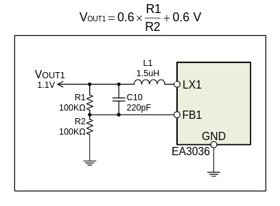
絲印位置
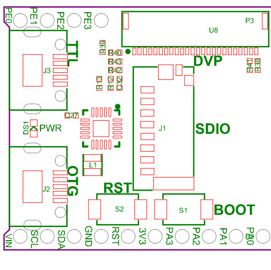
開發板

焊接
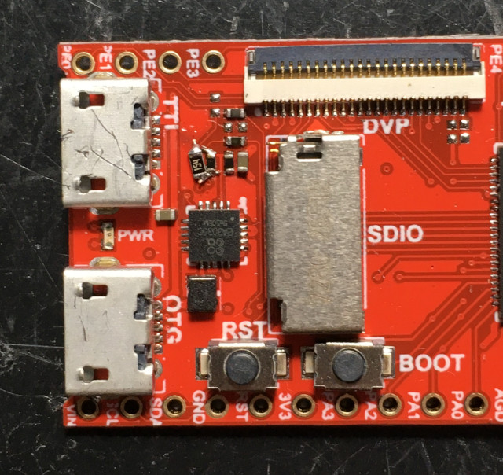
確定電壓是1.8V
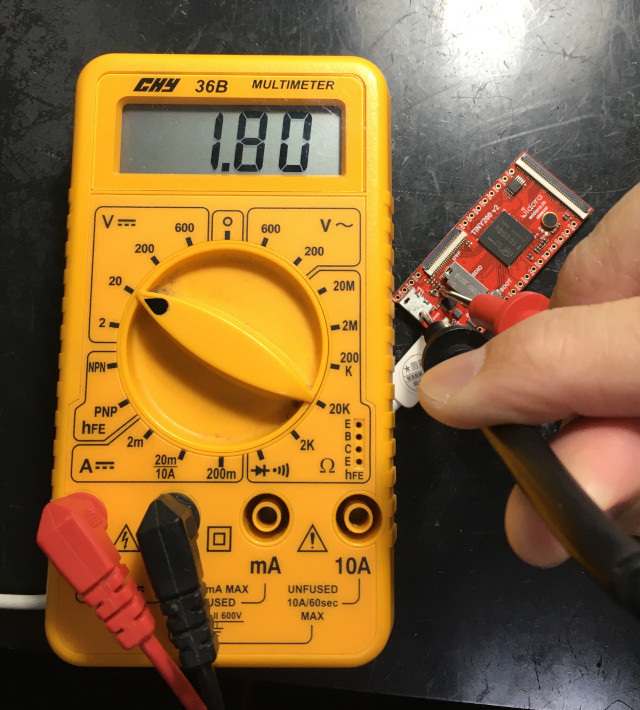
CPU速度計算公式
PLL = (24MHz*N*K)/(M*P) N = 13 K = 4 M = 1 P = 1 PLL = (24MHz*13*4)/(1*1) = 1248MHz
main.s
.global _start
.equiv CCU_BASE, 0x01c20000
.equiv GPIO_BASE, 0x01c20800
.equiv PLL_CPU_CTRL_REG, 0x0000
.equiv PLL_PERIPH_CTRL_REG, 0x0028
.equiv AHB_APB_HCLKC_CFG_REG, 0x0054
.equiv BUS_CLK_GATING_REG2, 0x0068
.equiv BUS_SOFT_RST_REG2, 0x02d0
.equiv PD, (0x24 * 3)
.equiv PORT_CFG0, 0x00
.equiv PORT_CFG1, 0x04
.equiv PORT_CFG2, 0x08
.equiv PORT_DATA, 0x10
.equiv PORT_PUL0, 0x1c
.equiv PORT_PUL1, 0x20
.arm
.text
_start:
.long 0xea000016
.byte 'e', 'G', 'O', 'N', '.', 'B', 'T', '0'
.long 0, __spl_size
.byte 'S', 'P', 'L', 2
.long 0, 0
.long 0, 0, 0, 0, 0, 0, 0, 0
.long 0, 0, 0, 0, 0, 0, 0, 0
_vector:
b reset
b .
b .
b .
b .
b .
b .
b .
reset:
ldr r4, =CCU_BASE
ldr r1, =(1 << 31) | (12 << 8) | (3 << 4)
str r1, [r4, #PLL_CPU_CTRL_REG]
0:
ldr r1, [r4, #PLL_CPU_CTRL_REG]
tst r1, #(1 << 28)
beq 0b
ldr r1, =(1 << 31) | (1 << 18) | (31 << 8)
str r1, [r4, #PLL_PERIPH_CTRL_REG]
0:
ldr r1, [r4, #PLL_PERIPH_CTRL_REG]
tst r1, #(1 << 28)
beq 0b
ldr r1, =(3 << 12)
str r1, [r4, #AHB_APB_HCLKC_CFG_REG]
ldr r4, =GPIO_BASE
mov r1, #1
str r1, [r4, #(PD + PORT_CFG0)]
0:
eor r1, #1
str r1, [r4, #(PD + PORT_DATA)]
b 0b
.end
接著測量一下I/O速度
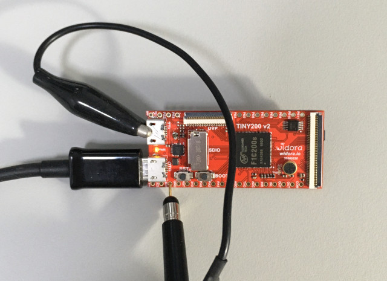
I/O速度為2.8MHz，不過CPU速度已經可以跑到1.2GHz，如果電壓再繼續增加，司徒相信CPU還可以操到更高，因為官方說最高可以到2.6GHz
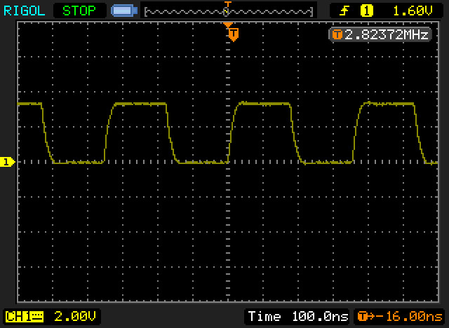
既然官方說最高可以超頻到2.6GHz，那最高到底可以超到多少呢？基於這個好奇心，司徒決定研究一下超頻，於是找來幾塊開發板
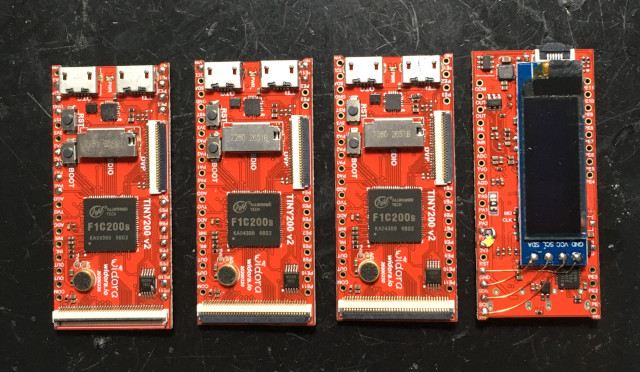
首先測試的開發板
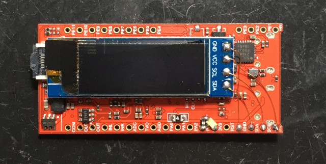
由於司徒並沒有太多精密電阻做分壓測試，因此，使用簡易的電源供應器
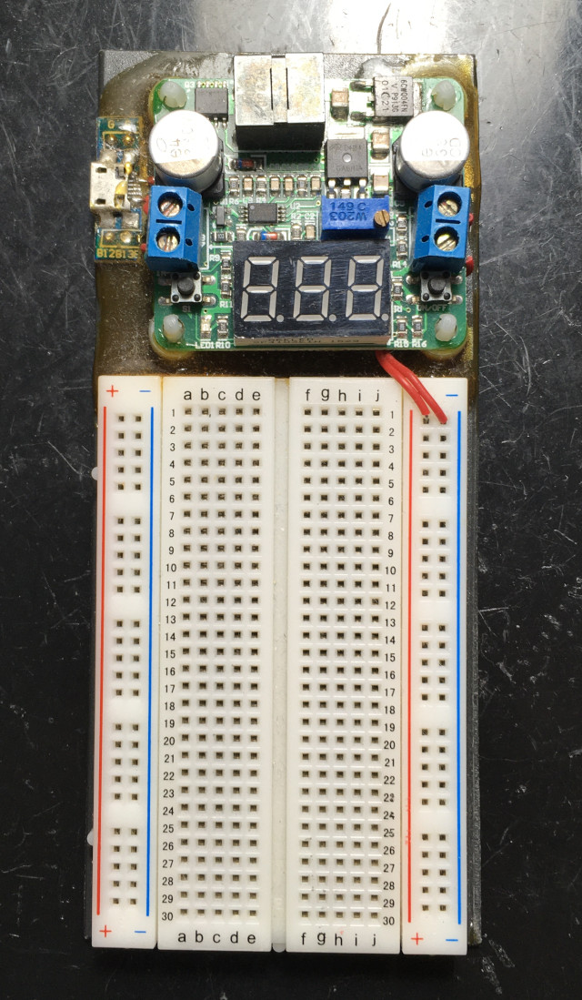
果然不是精準的電源供應器
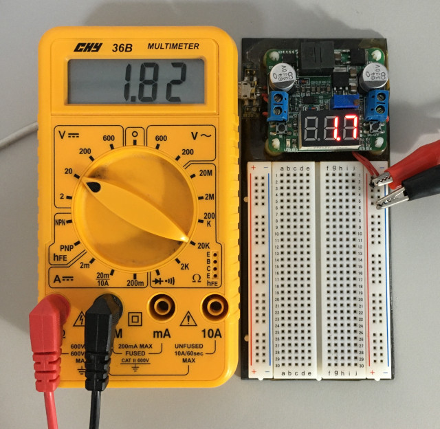
遺憾的是，司徒手上剛好沒有溫度測量器，因此，只好用手測試
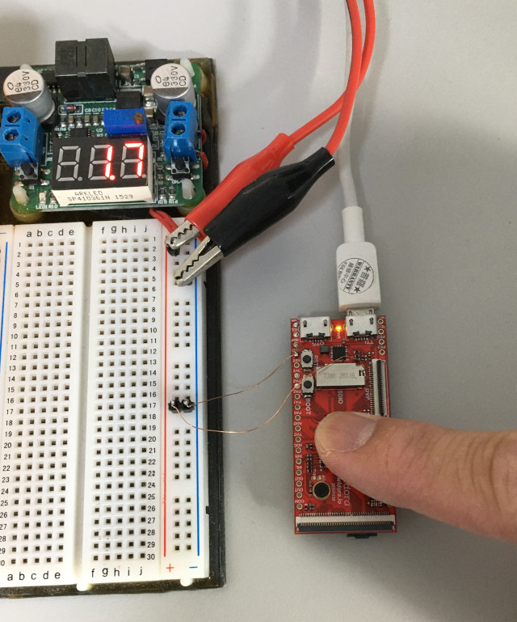
固定輸出1.2V
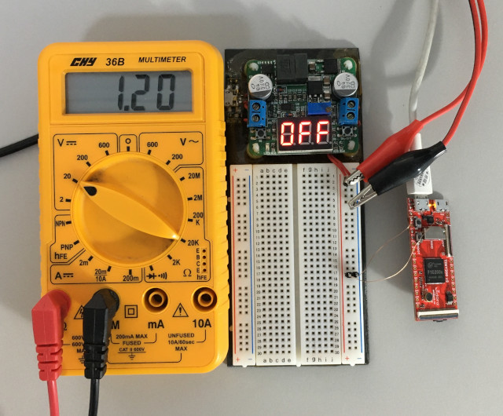
接著，司徒開始從1.8V測試
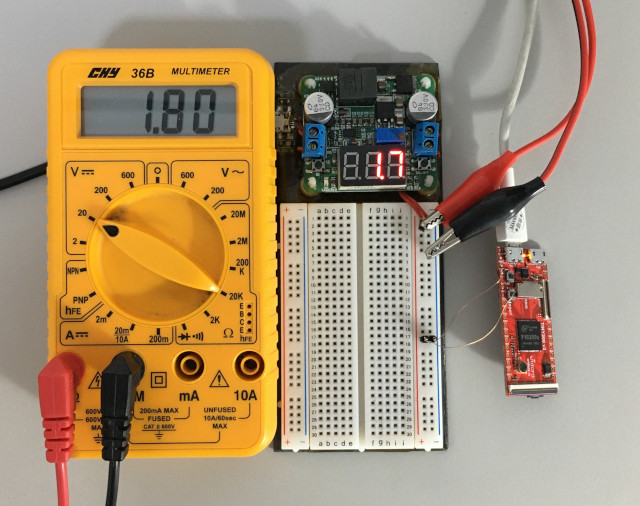
啟動後，吃掉0.05V
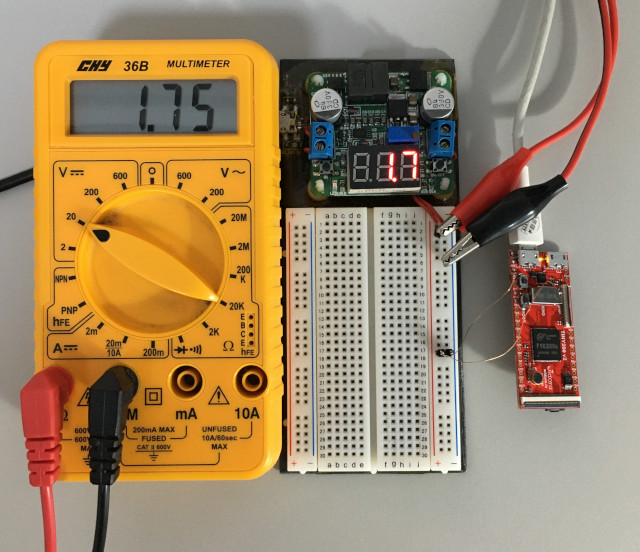
確定LED可以閃爍，代表此時的CPU頻率是可以工作的
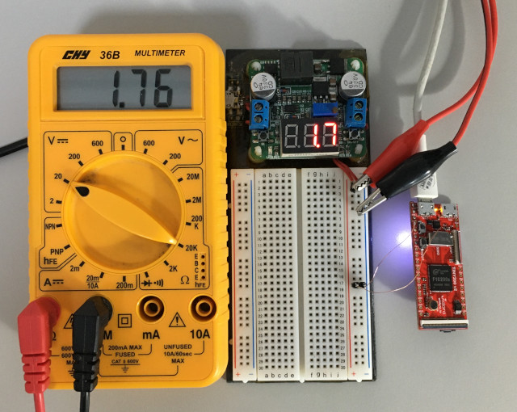
測試程式
.global _start
.equiv CCU_BASE, 0x01c20000
.equiv GPIO_BASE, 0x01c20800
.equiv PLL_CPU_CTRL_REG, 0x0000
.equiv PLL_PERIPH_CTRL_REG, 0x0028
.equiv AHB_APB_HCLKC_CFG_REG, 0x0054
.equiv BUS_CLK_GATING_REG2, 0x0068
.equiv BUS_SOFT_RST_REG2, 0x02d0
.equiv PA, (0x24 * 0)
.equiv PORT_CFG0, 0x00
.equiv PORT_DATA, 0x10
.arm
.text
_start:
.long 0xea000016
.byte 'e', 'G', 'O', 'N', '.', 'B', 'T', '0'
.long 0, __spl_size
.byte 'S', 'P', 'L', 2
.long 0, 0
.long 0, 0, 0, 0, 0, 0, 0, 0
.long 0, 0, 0, 0, 0, 0, 0, 0
_vector:
b reset
b .
b .
b .
b .
b .
b .
b .
reset:
ldr r4, =CCU_BASE
ldr r1, =(1 << 31) | (20 << 8) | (3 << 4)
str r1, [r4, #PLL_CPU_CTRL_REG]
0:
ldr r1, [r4, #PLL_CPU_CTRL_REG]
tst r1, #(1 << 28)
beq 0b
ldr r0, =GPIO_BASE
ldr r1, =0x1000
str r1, [r0, #(PA + PORT_CFG0)]
0:
eor r1, #8
str r1, [r0, #(PA + PORT_DATA)]
ldr r2, =1000000
1:
subs r2, #1
bne 1b
b 0b
.end
P.S. 在最早的測試，司徒忘記N最大只有到31，因此，在此次測試，司徒先把K設定成3，然後依序調整N，上面的程式：24MHz * N * K = 24MHz * 21 * 4 = 2016MHz
接著就開始慢慢調整電壓測試，找出該CPU頻率下，最低可以接受的電壓
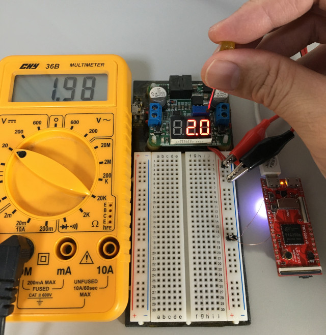
持續量測溫度
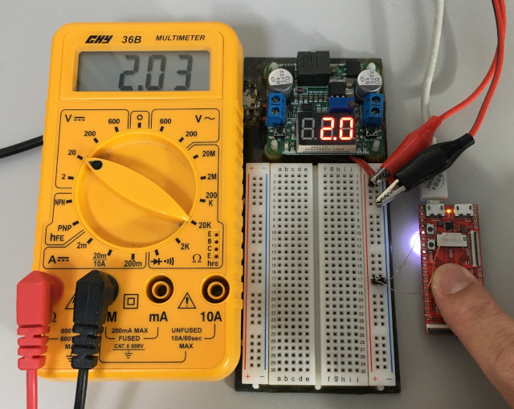
最後，司徒測試發現，電壓2.4V時，CPU可以超頻到2016MHz，此時CPU還可以正常運作，不過已經呈現發燙的狀態，可以加上散熱片使用，而電壓再往上增加時，CPU已經無法運作
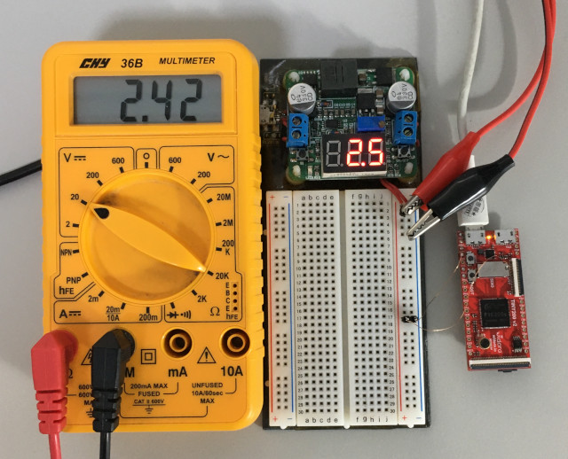
因此，司徒整理一下F1C100S超頻表格
| CORE電壓 | CPU頻率 | 人體溫度量測 | CPU設定 |
|---|---|---|---|
| 1.20v | 480MHz | 正常 | PLL_CPU_CTRL_REG = (1 << 31) | (4 << 8) | (3 << 4) |
| 1.20v | 576MHz | 正常 | PLL_CPU_CTRL_REG = (1 << 31) | (5 << 8) | (3 << 4) |
| 1.20v | 672MHz | 正常 | PLL_CPU_CTRL_REG = (1 << 31) | (6 << 8) | (3 << 4) |
| 1.20v | 768MHz | 正常 | PLL_CPU_CTRL_REG = (1 << 31) | (7 << 8) | (3 << 4) |
| 1.20v | 864MHz | 正常 | PLL_CPU_CTRL_REG = (1 << 31) | (8 << 8) | (3 << 4) |
| 1.20v | 960MHz | 正常 | PLL_CPU_CTRL_REG = (1 << 31) | (9 << 8) | (3 << 4) |
| 1.20v | 1056MHz | 正常 | PLL_CPU_CTRL_REG = (1 << 31) | (10 << 8) | (3 << 4) |
| 1.30v | 1152MHz | 正常 | PLL_CPU_CTRL_REG = (1 << 31) | (11 << 8) | (3 << 4) |
| 1.35v | 1248MHz | 微微溫 | PLL_CPU_CTRL_REG = (1 << 31) | (12 << 8) | (3 << 4) |
| 1.45v | 1344MHz | 微微溫 | PLL_CPU_CTRL_REG = (1 << 31) | (13 << 8) | (3 << 4) |
| 1.55v | 1440MHz | 微微溫 | PLL_CPU_CTRL_REG = (1 << 31) | (14 << 8) | (3 << 4) |
| 1.65v | 1536MHz | 微微溫 | PLL_CPU_CTRL_REG = (1 << 31) | (15 << 8) | (3 << 4) |
| 1.75v | 1632MHz | 微微溫 | PLL_CPU_CTRL_REG = (1 << 31) | (16 << 8) | (3 << 4) |
| 1.95v | 1728MHz | 微微溫 | PLL_CPU_CTRL_REG = (1 << 31) | (17 << 8) | (3 << 4) |
| 2.00v | 1824MHz | 微溫 | PLL_CPU_CTRL_REG = (1 << 31) | (18 << 8) | (3 << 4) |
| 2.20v | 1920MHz | 溫~燙 | PLL_CPU_CTRL_REG = (1 << 31) | (19 << 8) | (3 << 4) |
| 2.40v | 2016MHz | 發燙 | PLL_CPU_CTRL_REG = (1 << 31) | (20 << 8) | (3 << 4) |
最後，四塊開發板依然完好
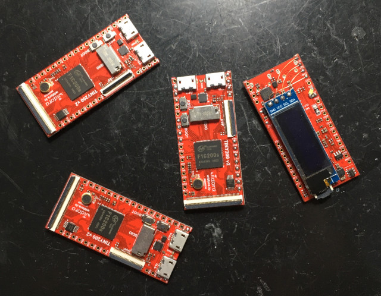
幸好手指也平安無事
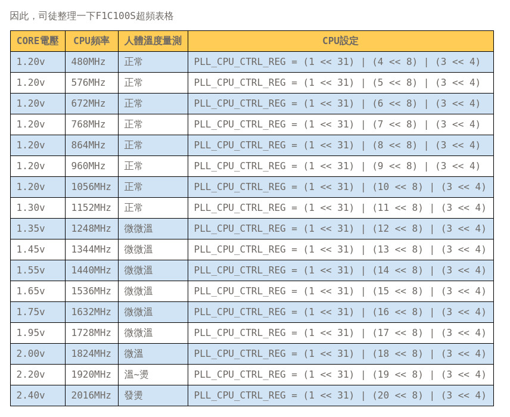
F1C200S在2.0GHz下，I/O速度可以多快呢？答案是7MHz
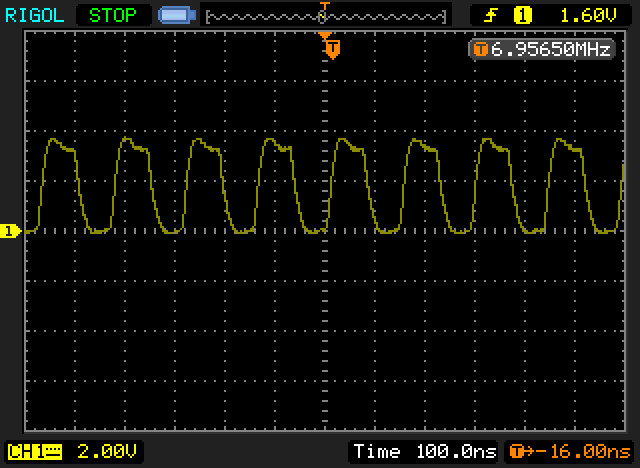
同場加映，司徒決定測試一下F1C100S超頻的耐久度，於是，司徒找來幾顆精密電阻，0.6 * (464K / 150K) + 0.6 = 2.456V
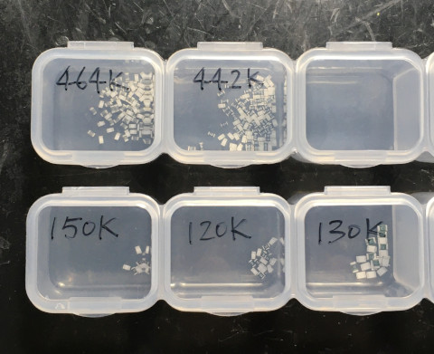
2.456V，雖然多了0.056V，不過應該差不多，這個電壓是司徒之前測試，F1C100S最大可以承受的電壓
開發板
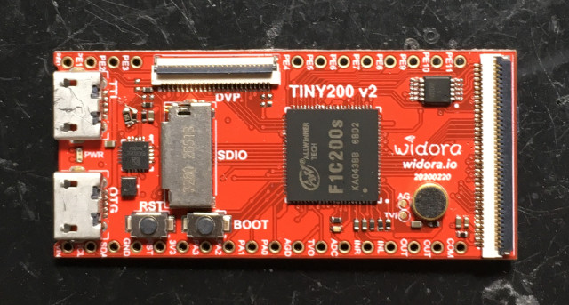
移除R12、R13
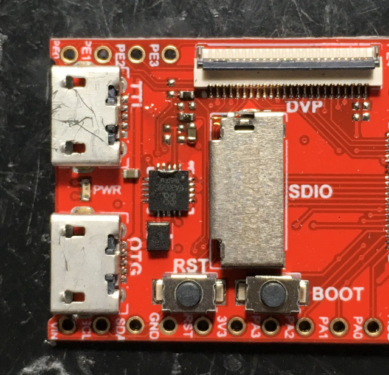
0.6 * (464K / 150K) + 0.6 = 2.456V，司徒焊接一顆LED做測試
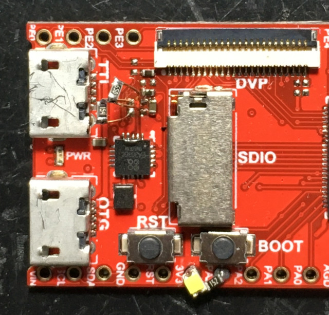
司徒這次要換另一根手指測試溫度
避免炸裂，司徒決定使用這個杯子保護
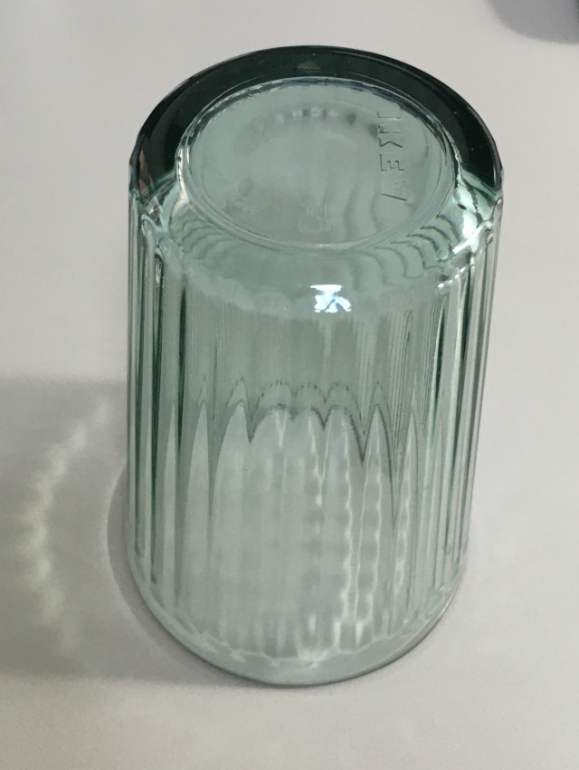
開始測驗，CPU=2016MHz
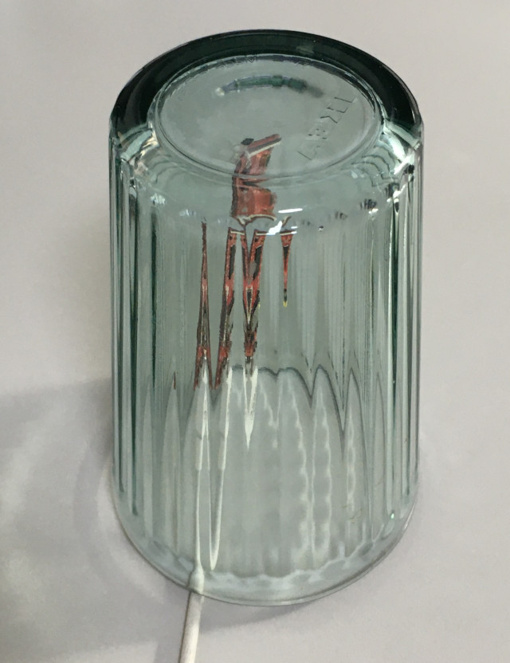
LED開始閃爍
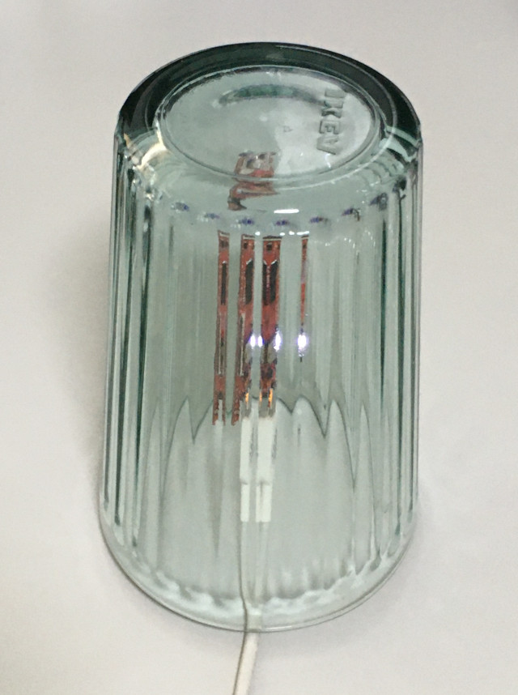
6秒後，開發板掛掉了，再怎麼連接USB，都無法進入燒錄模式
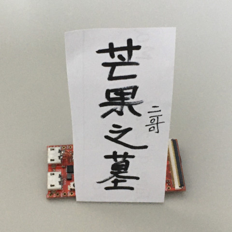
於是，司徒找來另外的精密電阻，442K電阻配上160K電阻，0.6 * (442K / 160K) + 0.6 = 2.2575V
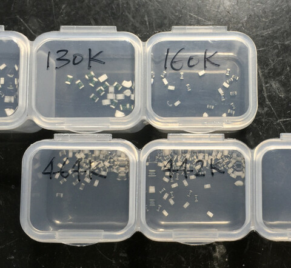
0.6 * (442K / 160K) + 0.6 = 2.2575V
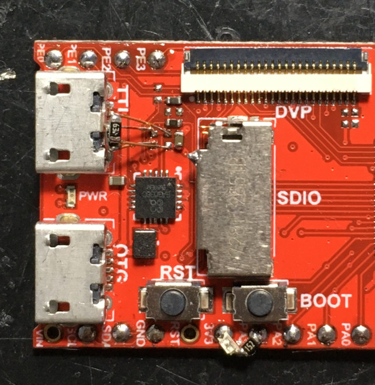
開始測試
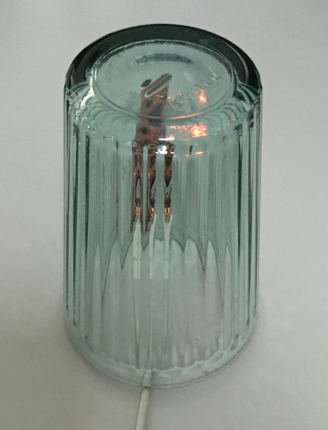
CPU=2016MHz，10秒後掛點，不過插入USB，還是可以進入燒錄模式，因此，電壓2.2575V是不會燒毀F1C100S的保險電壓，而司徒測試CPU=1920MHz
60秒後，果然會燙
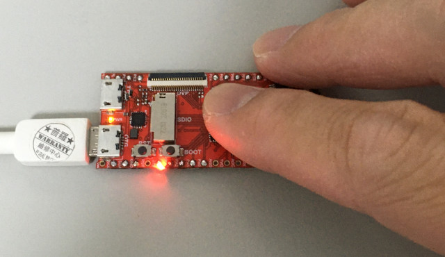
司徒臨時找不到散熱片...
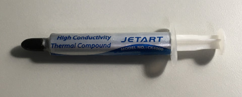
那就只好電風扇伺候...
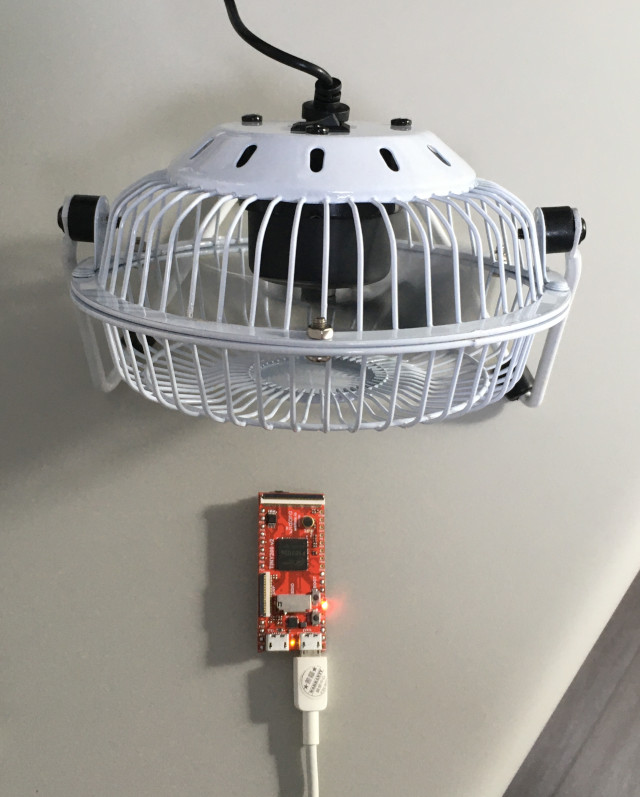
測量溫度，果然還是有點燙，不過，CPU=1920MHz，跑了三分鐘，依然沒有問題，因此，司徒覺得1920MHz，加上散熱片，應該是可以拿來使用的
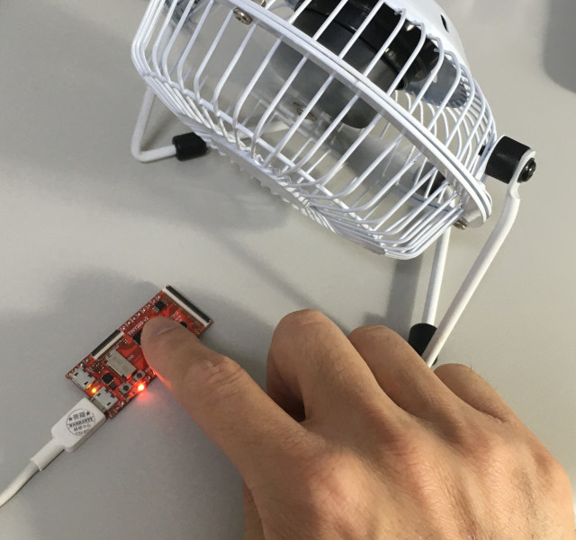
僅存的開發板
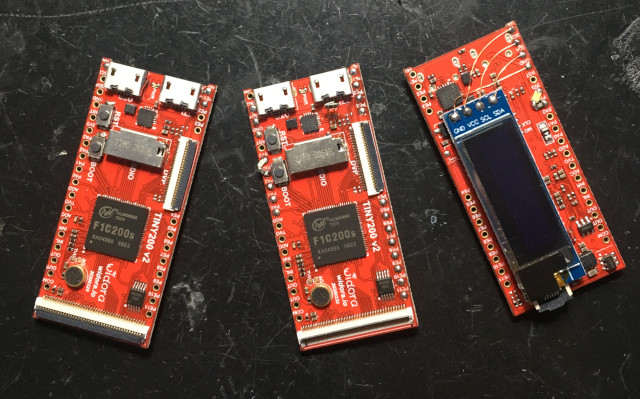
結論：
CPU=2016MHz，需要找出臨界電壓，容易燒毀，不建議使用
CPU=1920MHz，F1C100S加上散熱片，可以跑，不過目前只有測試Toggle I/O